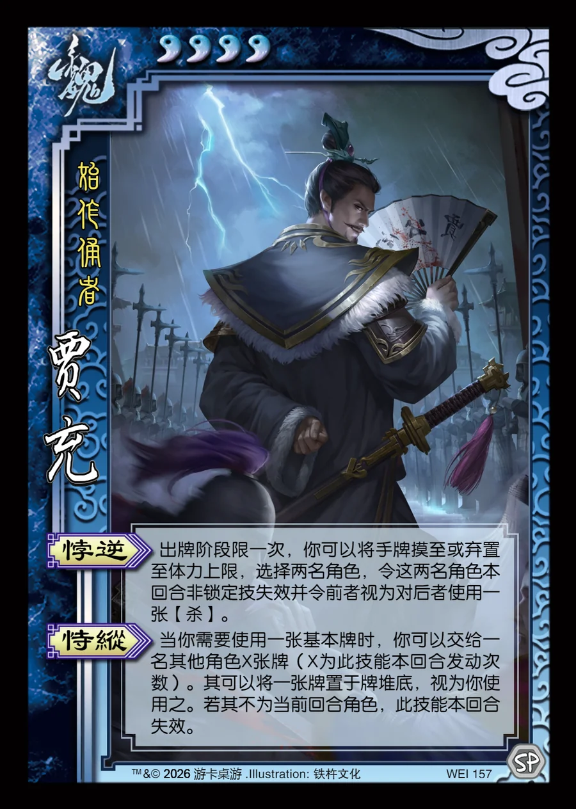

点击卡面查看大图
魏
贾充
♥4始作俑者
悖逆
出牌阶段限一次，你可以将手牌摸至或弃置至体力上限，选择两名角色，令这两名角色本回合非锁定技失效并令前者视为对后者使用一张【杀】。
恃纵
当你需要使用一张基本牌时，你可以交给一名其他角色X张牌（X为此技能本回合发动次数）。其可以将一张牌置于牌堆底，视为你使用之。若其不为当前回合角色，此技能本回合失效。

点击卡面查看大图
始作俑者
出牌阶段限一次，你可以将手牌摸至或弃置至体力上限，选择两名角色，令这两名角色本回合非锁定技失效并令前者视为对后者使用一张【杀】。
当你需要使用一张基本牌时，你可以交给一名其他角色X张牌（X为此技能本回合发动次数）。其可以将一张牌置于牌堆底，视为你使用之。若其不为当前回合角色，此技能本回合失效。